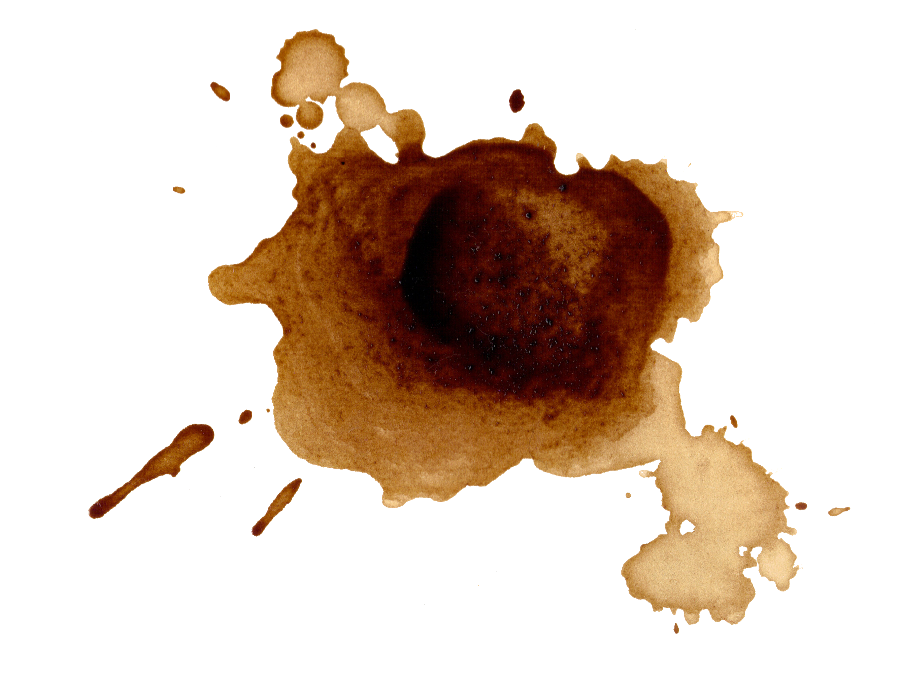
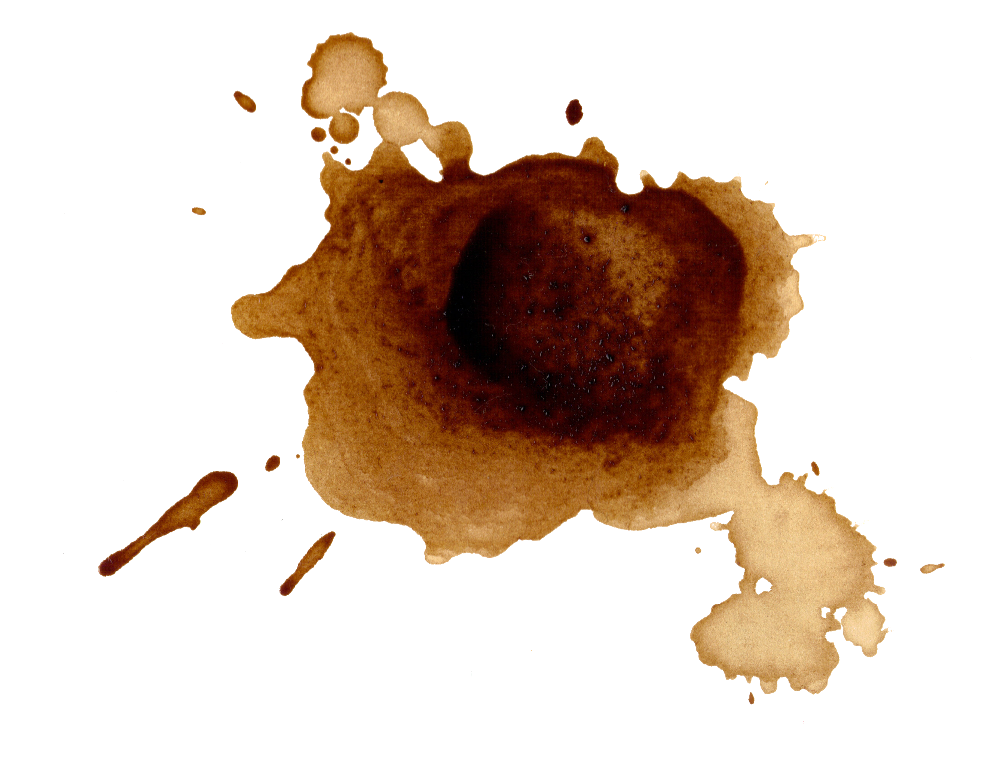

PROJECT NAME
“PRIDE: An NYUAD Film”
PROJECT DESCRIPTION
This website was made for my group's 30 Minute Film Festival entry called "Pride: An NYUAD Film". The website has also been optimized for all screens, whether it be computer or phone. I aimed at creating an eye-catching, yet equally minimalistic site aimed to explain the website, as well as the current states of the LGBTQ+ community in my groupmate's home countries. I wanted to give the user an easy time to navigate the page, and also give them a few interactive activities along the way.
PROCESS
I went about this by first creating a navigation page of the three pages: Home, Characters, and Contact Us. The page you are on will be highlighted yellow in the navigation bar. The Home page first shows the title of the video, with an interactive aspect of turning multicolored when you hover on it. Next to the title is a LGBTQ+ flag and sparkles, which adds a dynamic feel to the website.
The second part of the Home page shows a "MEET THE CAST" section, with my groupmates' photos all in one line, with our name and button under each. When you hover on each photo or button, it will turn grayscale. This serves as a way for the user to go straight to a character's page, instead of going to the Character's page and clicking a specific name. It also shows NYUAD's social media platforms.
The Characters page of the website allows the user to read about each groupmate one after the other. There is a fixed button that, when clicked, will show the current time in each character's home country. Each page tells a bit about the groupmate's life at NYUAD, as well as how the LGBTQ+ scene is in their country of origin. It also includes an interactive mini game that allows you to guess the country's flag, with a pop-up alert showing if you are wrong or right.
The Contact Us part of the website shows NYUAD's contact information, as well as a small interactive form that allows you to add messages and names. However, since this is only for the assignment, the Submit button will trigger a pop-up alert that says it is only for assignment purposes.
REFLECTION/EVALUATION
I believe that I exceeded my own expectations in creating this website, and I definitely spent more time on it because I was genuinely interested in creating more. I learned more tricks in HTML, CSS, and Javascript that I will definitely use in the future. Though I had some obstacles such as the responsive resizing of the website to cater to all screens, I am proud of the final result.
 
